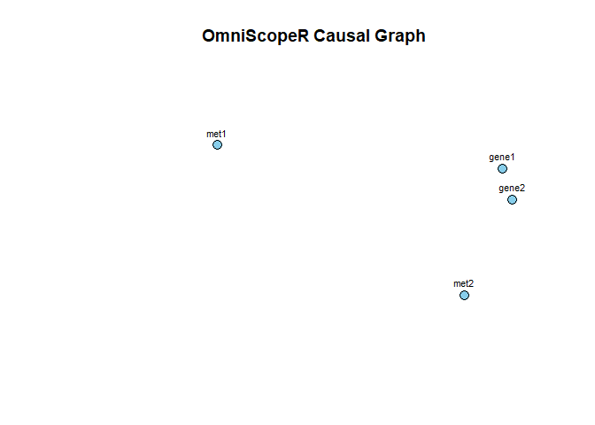

OmniScopeR
OmniScopeR — a causality-aware visualization framework for multi-omics integration and exploration.
library(OmniScopeR)
# Example data
df1 <- data.frame(gene1 = rnorm(10), gene2 = rnorm(10))
df2 <- data.frame(met1 = rnorm(10), met2 = rnorm(10))
rownames(df1) <- rownames(df2) <- paste0("Sample", 1:10)
omics <- omni_integrate(df1, df2)
graph <- omni_causal(omics)
omni_visualize(graph)
importance <- omni_explain(omics, phenotype = rnorm(10))
omni_narrate(omics, graph, importance)
#> OmniScopeR Report
#> =================
#> Samples: 10
#> Features: 4
#>
#> Top Important Features:
#> gene2, gene1, met2, met1
#>
#> Causal Graph Density: 0